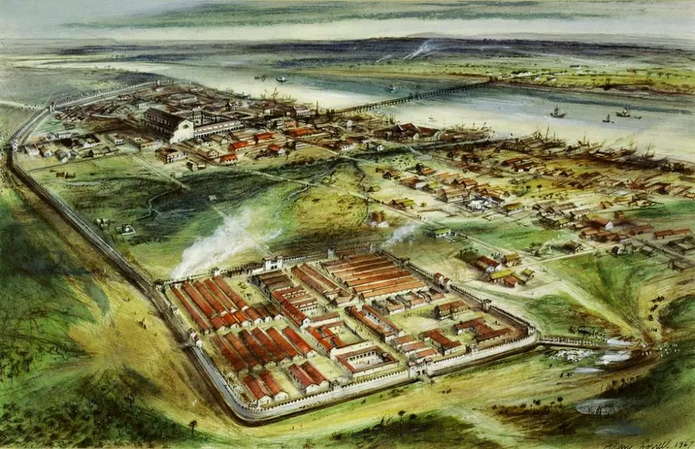
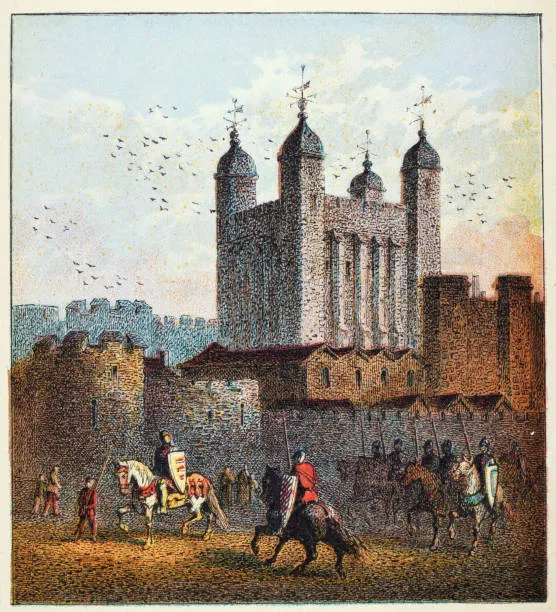
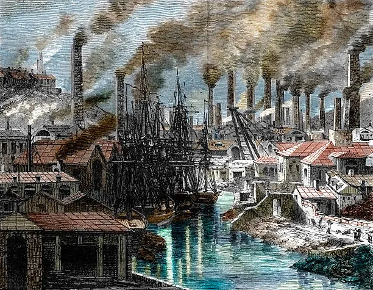
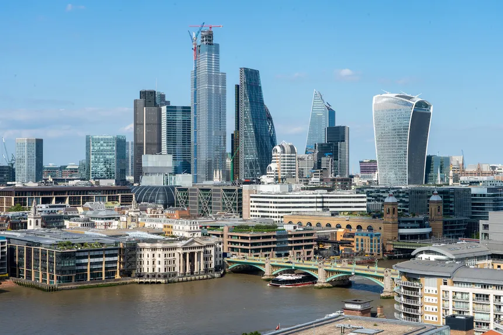

Von der römischen Gründung bis zur modernen Weltmetropole.
London wurde ursprünglich von den Römern gegründet und trug den Namen Londinium. Schon damals war die Stadt ein wichtiger Handelsplatz und entwickelte sich schnell zu einem bedeutenden Zentrum.

Im Mittelalter wuchs London stark. Der Tower of London wurde errichtet und diente als Festung, königlicher Palast und später auch als Gefängnis.

Die industrielle Revolution machte London zu einer der größten Städte der Welt. Neue Technologien, Handel und Kultur prägten die Entwicklung der Stadt nachhaltig.

Heute ist London eine globale Metropole, bekannt für Vielfalt, Wirtschaftskraft und moderne Wahrzeichen.
